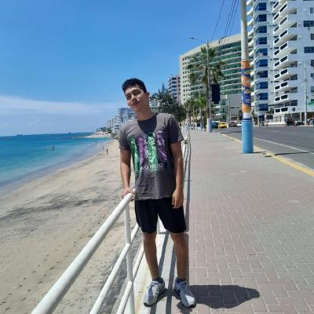

Resumen
Soy un estudiante de la espol apasionado por la programación. Me interesa mucho el desarrollo de programas y aplicaciones, Asi como la estructura de una aplicacion y todo lo que conlleva a la mejora del software en un poryecto o sistema de trabajo.
Dispongo de conocimientos en diferentes lenguajes de programacion, me gustaria seguir aprendiendo sobre temas mas profundos enfocados en el desarrollo de software y desarrollo de proyectos tanto web como programas. Soy una persona autodidacta y abierta a nuevos desafios, lo que busco en mi formacion profesional es innovar y ayudar al entorno de estudio en el que me especialice.
Cuentas y Redes
Imagenes de mis perfiles
Educación
Mi amor por la programacion se desarrollo cuando me encontraba estudiando en el colegio
"Unidad Educativa Claretiana" en donde decidi escoger la especialidad de computación.
Ademas de aprender programacion basica, tambien pude aprender un poco de electronica
en donde desarrolle diferentes proyectos con arduino. Subia novedades de mis proyectos a
Youtube ya que servia como respaldo para la realizacion de este.
En el año presente 2024 estoy completando mis estudios en la carrera de Computacion
en la ESPOL, donde he adquirido conocimientos amplios de programacion, relacionado a la
varidad de lenguajes, los entornos de desarrollo, y las herramientas para trabajar con un
equipo de proyectos.
Habilidades
Dispongo de conocimientos en varios lengaujes de programacion.